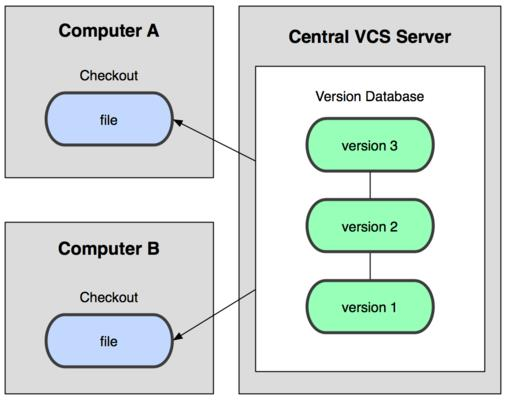
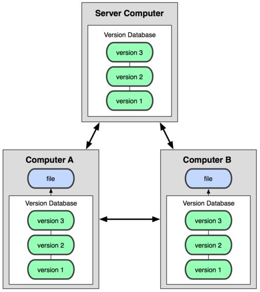
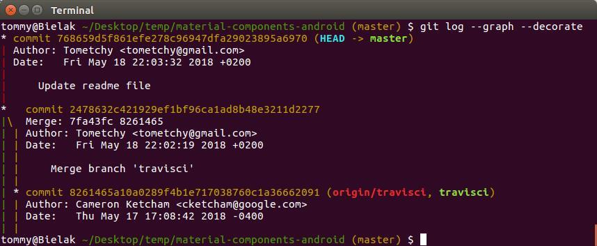
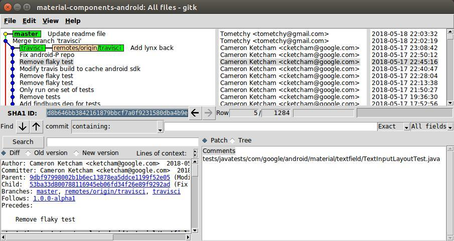

GitWarsztaty
Szlifowanie Gita

Tomasz Skraskowski

- Backend developer at Pirios S.A.
- Writes code since 12
- Currently .Net (Core), previously C++
- Interested in decentralized systems
- www.SoftwareDeveloper.Blog
Kwestie organizacyjne
- Prośba o zalogowanie się na kanał slackowy
- Po warsztatach prośba o uzupełnienie ankiety
- Pytania po czasie - Krzysztof Morcinek firmowy TechTalk
- Mówienie sobie po imieniu
- Czy są osoby zdalne? Jak mnie widać? Jak mnie słychać?
Konsola & Gitk & Kdiff3


Pytania?

Konsola Gita
- Najefektywniejsza
- Najbardziej rozbudowana
- Uniwersalna (toole UI na niej bazują)
Kdiff3
- Efektywny
- Uniwersalny (pasuje do każdego kontekstu)
Dwa słowa o konfiguracji

Trzy poziomy konfiguracji
-
--global(brany pod uwagę w drugiej kolejności)-
Linux:
~/.gitconfig -
Windows:
%USERPROFILE%\.gitconfig
-
Linux:
-
--local(brany pod uwagę w pierwszej kolejności)-
.git/config
-
-
--system(brany pod uwagę na końcu)-
Linux:
/etc/gitconfig -
Windows:
%ProgramFiles(x86)%\Git\etc\gitconfig -
Windows:
%ProgramFiles%\Git\mingw64\etc\gitconfig
-
Linux:
Polecenie do modyfikowania
-
git config --POZIOM SEKCJA.NAZWA "TREŚĆ"-
Np.
git config --global user.name "John Doe"
-
Np.
Domyślny poziom przy zapisywaniu to local
Polecenia do odczytywania
-
Konkretny wpis:
git config (--POZIOM) SEKCJA.NAZWA-
Np.
git config --get user.email
-
Np.
-
Listowanie wpisów:
git config (--POZIOM) --list-
Np.
git config --list
-
Np.
Bez podania poziomu, git przyjmuje obecnie brany pod uwagę poziom
Uniwersalne polecenie
-
git config --POZIOM --edit-
Np.
git config --global -e
-
Np.
W praktyce 99% przypadków to:
git config --global -e
Pytania?
git config --global -e- Można dla wybranego repo (--local) mieć inną konfigurację niż globalnie
Nie będziemy rozmawiać o flow


Używaj stage
Porządkuj zmiany przed commitem
Lepiej jest commitować z konsoli
(zwłaszcza w porównaniu do IntelliJ)
Sam zarządzaj Gitem
Nie pozwól IDE grzebać Ci w Gicie (stagować/unstagować)
Dla Jet Brains skrypt w materiałach.Git Side Effect

Pytania?
- Używaj stage
- Sam zarządzaj Gitem
- Zapisz się na warsztaty Git Side Effect 🙂
Czym jest HEAD i po co nam to wiedzieć
HEAD to referencja do obecnie zcheckoutowanego commita, zazwyczaj będącego ostatnim commitem w branchu- HEAD - ostatni commit (pierwszy od końca) - np. ed8ab42[...]
- HEAD~1 - przedostatni commit - np. daa6b92[...]
- HEAD^ - przedostatni commit - np. daa6b92[...]
- HEAD~3 - czwarty od końca commit - np. 7cb16f7[...]
- HEAD^^^ - czwarty od końca commit - np. 7cb16f7[...]
Edytowanie wprowadzonych zmian
- Przed opublikowaniem innym
- Po opublikowaniu innym
Edycja 'ostatnich' commitów przed opublikowaniem
- git reset
- git reset --mixed
- git reset --soft
- git reset --hard
- commit --amend
- rebase
- rebase --interactive
Edycja 'ostatnich' commitów po opublikowaniu
git revert
np:
- git revert HEAD
- git revert HEAD~4
- git revert 6e5av3a
Modyfikacja working directory i staging area
- git checkout *PATH*
- git reset --hard
- git clean (-d -f -n)
Ćwiczenie wspólnie z demo reset, revert, commit ammend
cwiczenia/#reset-revert-commit-ammend
Pytania?
rebase --interactive

rebase --interactive
Przenosimy linie tekstu w edytorze
Zmieniamy komendy z początków linii w edytorze
Zawsze wnikliwie czytamy podpowiedzi gita, piszemy git status gdy znikną
Branche

cherry-pick
Commity między branchami można przekładać

Demo
pokazanie jak zmiana brancha wpływa na zawartość katalogów (git checkout)
stosowanie cherry-pick w praktyce
Merge

Rebase

Merge vs rebase

Git Guitar Hero

Rebase to świetne narzędzie...
... ale w niektórych sytuacjach trzeba uważać.
Czasami łatwiej przerwać rebasowanie i jeżeli
flow projektu na to pozwala, jednak zrobić zwykłego merge.
(głównie przy
starych, mocno rozjechanych branchach)
- rebase zakłamauje historię
- rebase może wywołać konflikty których by nie było przy mergu
- a w związku z tym, może wprowadzić błąd na produkcję
- pomijając, że to dokłada dodatkowej roboty
Konflikty
- Są czymś naturalny w środowisku gdzie niezależne osoby działają
-
Tak wygląda powstały konflikt w kodzie




Git to w zasadzie baza danych
Git to VCS na który można patrzeć, jak na rozproszoną bazę danych, opartą na streamie snapshotów plikow

Pushowanie
&
pullowanie zmian
Synchronizacja repozytoriów (np. lokalnego z wersją na GitHubie) odbywa się za pomocą 'wypychania' i 'ciągnięcia' commitów
- git push
-
git pull
- git fetch
- git merge
Pull z rebase
Często dobrą opcją jest zastosowanie komendy która od razu za nas zrebasuje commity
git pull --rebase
git config --global --bool pull.rebase true
Push --force
Jeżeli jesteś pewny co robisz, możesz wymusić pushagit push --force
Ale jak już wymuszasz, to zawsze z zabezpieczeniem
git push --force-with-lease
Przeglądanie historii
git loggitk
Git log oraz gitk domyślnie pokazują historię od obecnego momentu - HEAD, ale
możliwe jest wskazanie dowolnego
momentu w historii, np. nazwy brancha, SHA commita lub odniesienia SHA^ lub SHA~N
np.
HEAD^, master~5
Popularne przełączniki do git log / gitk
git log -4git log --onelinegit log --graphgit log --decorategit log --statgit log --patchgit log --since=X,git log --after=X,git log --before=Xgit log X --not Y,git log Y..X,git log X...Ygit log --author="xyz"git log --grep="xyz" -igit log --no-mergesgit log --allgit log --pretty="FORMAT"git log -S"text" -iWyjście ze strumienia logów - klawisz q
git log z grafem

git log z jednoliniowymi wynikami

git log z pokazaną statystyką i diffem

gitk

Szukanie w ładnych toolach
- Jest ładne
- Jest ograniczone
- Wymaga oderwania się od konsoli
Przygotowanie do ćwiczeń z przeglądaniem historii
-
Przejdź do katalogu ćwiczeń na pulpicie:
cd ~/Desktop/cwiczenia - Sklonuj przykładowe repozytorium (z projektem open
source), do katalogu
log-demo:
git clone https://gitlab.com/terrakok/gitlab-client log-demo -
Przejdź do katalogu repo:
cd log-demo -
Zresetuj repozytorium do wersji: 7ad14ecda2f97a3ff7c3cca44cc7605484b578b5
git reset --hard 7ad14
Żeby każdy miał tę samą wersję do ćwiczeń
Sprawdź tytuł ostatniego commita autora z nazwiskiem Gulya
Gitk
gitk --author=gulya -1
Konsola
git log --author=gulya -1
Odpowiedź:
Upgrade Markwon to version 2.0.0. Replace ImageSizeResolver workaround with upstream one.
Pytania?
Sprawdź autora commita zawierającego w opisie frazę Update Stub
Gitk
gitk --all --grep="Update Stub" -i -1
Konsola
git log --all --grep="Update Stub" -i -1
Odpowiedź:
terrakok
Pytania?
Sprawdź kto podniósł wersję produktu z 9 na 10
(text w kodzie: versionCode 10)
Gitk
Da się wyklikać :)Konsola
git log -S "versionCode 10" -i -p
Odpowiedź:
terrakok, w commicie
6d289b10a07bb13d75a7b9767b9b0ae52b0421ce
Pytania?
Sprawdź jakie pliki modyfikował commit
b9272a3be3d4f9182e6893a0f9a2f7b9ff0b6923
Gitk
gitk b927 -1
Konsola
git log b927 -1 --stat
.../model/repository/session/SessionRepository.kt | 9 +++++++++
.../terrakok/gitlabclient/presentation/auth/AuthPresenter.kt | 12 ++++++------
Sprawdź co dokładnie zmienił commit
0e02008383a59f6ab56a14df4688070aab925765
Gitk
gitk 0e020 -1
Konsola
git log 0e020 -1 --patchlub
git show 0e020
Odpowiedź:
Linie dodane do pliku PrivacyPolicyFragment.kt:
override val parentScopeName = DI.APP_SCOPE
pusta
Toothpick.inject(this, scope)
Linia usunięta z pliku
PrivacyPolicyFragment.kt:
Toothpick.inject(this,
Toothpick.openScope(DI.APP_SCOPE))
Pytania?
Sprawdź id commitów z drugiego grudnia 2018
Gitk
gitk --after="2018-12-02 00:01" --before="2018-12-02 23:59"
Konsola
git log --after="2018-12-02 00:01" --before="2018-12-02 23:59" --oneline
6167018 Merge branch 'task/upgrade-markwon-and-remove-image-loading-crutch' into
'develop'
fdb2e6c Merge branch 'project_milestone_tab' into 'develop'
158bba8 Delete unused "todo".
6d45888 Add account id for fixing same userId for difference servers.
0e02008 Fix scope for PrivacyPolicyFragment.
c46c806 Merge branch 'feture/multi_account' into develop
45c0836 Delete code style from git history.
5752be0 Add scopes to each fragment for more powerful memory management.
Gitk
gitk develop --not origin/developlub
gitk origin/develop..develop
Konsola
git log develop --not origin/developlub
git log origin/develop..develop
Odpowiedź:
Nie ma takich
Pytania?
gitk pokazujący cały stan projektu

git ls-tree -r 0e020 --name-only
Ignorowanie plików
Ścieżki do plików/katalogów które chcemy ignorować dla repozytorium, trzymamy w pliku .gitignore
Plik ten wersjonujemy w repozytorium
Przykładowe reguły ignorowania
*.orig**/[Pp]ackages/*bin/!src/Todo.csproj.user- wykluczenie od reguły (zaczyna się od wykrzyknika)
Dodaję regułę do .gitignore, a "git status" dalej pokazuje zmiany
Jest to scenariusz na który każdy prędzej czy później się natknie
Powód jest prosty - plik już jest w repozytorium,
.gitignore ignoruje tylko
nie śledzone pliki
Wystarczy plik... usunąć z repozytorium
Usuwanie pliku z repozytorium, żeby "posłuchał" reguł .gitignore
-
Tradycyjnie:
usunięcie pliku -> git add -> git commit -
Za pmocą komendy:
git rm file1.txt
git commit -m "remove file1.txt" -
Zostawiając plik na dysku:
git rm --cached file1.txt
git commit -m "remove file1.txt"
Gotowe reguły .gitignore
- www.gitignore.io
- checkbox przy tworzeniu nowego projektu
- Krzyśka Morcinka ;) .gitignore
7 zasad dobrego commit message
- Oddziel tytuł od ciała pustą linią
- Ogranicz tytuł do 50 znaków
- Stosuj wielkie litery w tytule
- Nie kończ tytułu commita kropką
- Zapisuj tytuł w trybie rozkazującym
- Ogranicz 'szerokość' ciała do 72 znaków
- Opisz co i dlaczego, a nie jak
https://chris.beams.io/posts/git-commit/
git reflog

schowek
git stashgit stash --include-untrackedgit stash listgit stash apply (optional: name)git stash pop (optional: name)git stash drop (optional: name)- Różne wariacje, zachowywanie indexu, nadawanie wiadomości itd.
Uwaga
Łatwo zapomnieć o nieśledzonych plikach
Forki & Pull requesty

Pytania? - Pull requesty!
Jak działa git
Git w podstawowym scenariuszu jedynie dodaje kolejne snapshoty plików


W przeciwieństwie do kryptowalut...
możesz zmieniać istniejące snapshoty (commity)
ALE!
wiedząc, że jakoś trzeba się z innymi zsynchronizować :)
Git nie śledzi plików
W przeciwieństwie do niektórych VCS,
git nie śledzi plików, wyłącznie ich zawartość

Przydatne narzędzia związane z gitem
- GitHub Pages / GitLab Pages / Netlify
- Np. prezentacja na którą właśnie patrzymy:
gitwarsztaty.pl/prezentacja
- Np. prezentacja na którą właśnie patrzymy:
- GitHub gist
Tagi
Lekkie(lightweight) - tylko wskaźnik z nazwą
git tag v1.4
Opisane(annotated) - posiadają opis, sumę kontrolną, autora, datę itd.
git tag -a v1.4 -m 'my version 1.4'
Pushowanie tagów
Fetch pobiera wszystkie tagi z serwera, ale domyślnie tagi się nie wypushowują
Dwa sposoby pushowania tagów
- Zalecany:
git push origin tag_name - Silnie odradzany:
git push --tags
Trunk Based Development

Git Flow

Git Guitar Hero
Git blame
Który to ?!

Git blame w dobrym IDE jest równie wygodne jak w konsoli

Aliasy
Modyfikacje aliasów można wykonywać w gitconfigu
[alias]st = statusci = commit -v
Albo za pomocą polecenia
git config --global alias.st statusgit config --global alias.ci 'commit -v'
Przykład użycia - skrócone wypisywanie statusu
git st
Inne przykłady aliasów
wdiff = diff --word-diff=plainrh1 = reset HEAD^ --hardamend = commit --amend -aC HEADstandup = log --since '1 day ago' --oneline --author krzysztof.morcinek@gmail.com # hack it with your emailcam = commit -amjira = log --since '6am' --oneline --author krzysztof.morcinek@gmail.com # hack it with your email-
ls = log --pretty=format:"%C(yellow)%h%Cred%d\\ %Creset%s%Cgreen\\ [%cn]" --decorate mt = mergetool
Wiele remotów
git remote add anotherOrigin https...git remote -vgit push anotherOrigingit fetch anotherOrigingit push -u anotherOrigin your_branch
Credentials helper
Każdy push, fetch (czyli również pull), wymaga autoryzacji...

Wbudowane credentials helpery
-
cache-
git config --global credential.helper 'cache --timeout=300'
Bezpieczny, ale tylko tymczasowy (in memory).
Opcjonalnie własny timeout w sekundach (domyślny 900 - 15minut).
-
-
store-
git config --global credential.helper store
Wygodny, ale niebezpieczny - credentiale zapisane w pliku tekstowym niezaszyfrowane.
-
libsecret - wygodny i bezpieczny credentials helper dla Linux
Przykładowa instalacja dla Linux Mint / Ubuntusudo apt-get install libsecret-1-0 libsecret-1-devcd /usr/share/doc/git/contrib/credential/libsecretsudo make
Konfiguracja (gdy już zainstalowany)
git config --global credential.helper /usr/share/doc/git/contrib/credential/libsecret/git-credential-libsecret
Wygodny i bezpieczny credentials helper dla Windows
Instalator: github.com/Microsoft/Git-Credential-Manager-for-Windows/releases
Lub checkbox w trakcie instalacji gita:

Powinno ustawić: git config --global credential.helper manager
albo ścieżkę do exe
Strategie mergowania
- resolve
- recursive
- ours
- theirs
- patience
- diff-algorithm=[patience|minimal|histogram|myers]
- ignore-space-change
- ignore-all-space
- ignore-space-at-eol
- ignore-cr-at-eol
- renormalize
- no-renormalize
- no-renames
- find-renames[=n]
- rename-threshold=n
- subtree[=path]
- octopus
- ours
- subtree
Podpis kryptograficzny
Commity i tagi można podpisywać kryptograficznie, jednak wymaganie tego w workflow jest kłopotliwe
-
$ git log --show-signature
commit 5c3386cf54bba0a33a32da706aa52bc0155503c2
gpg: Signature made Wed Jun 4 19:49:17 2014 PDT using RSA key ID 0A46826A
gpg: Good signature from "Scott Chacon (Git signing key) <schacon@gmail.com>"
Author: Scott Chacon <schacon@gmail.com>
Date: Wed Jun 4 19:49:17 2014 -0700
Add new function
Git hooks

Git bisect
Automatyzacja szukania commita, który wprowadził błąd

Ostrzenie konsoli
Różne edytory tekstowe
- vim
git config --global core.editor vim - Linux Mint - xed
git config --global core.editor xed - Ubuntu - gedit
git config --global core.editor gedit - Windows - notepad
git config --global core.editor notepad - Windows - notepad++
git config --global core.editor "'C:/Program Files/Notepad++/notepad++.exe' -multiInst -notabbar -nosession -noPlugin" - Windows - Visual Studio Code
git config --global core.editor "'C:\Program Files\Microsoft VS Code\code.exe' -n -w"
Dziękuję za uwagę